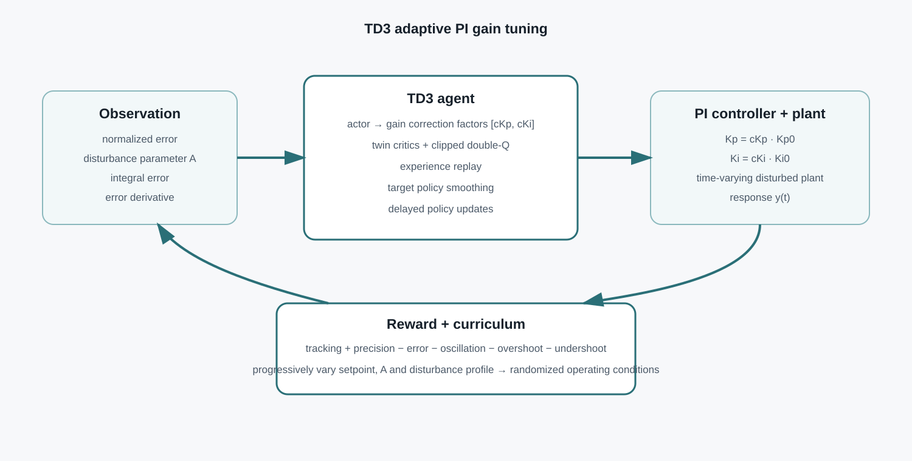

Selected project
RL-Based Active Disturbance Rejection
A TD3 agent adapts PI-controller gains online as plant behaviour changes under disturbance. The project was developed in MATLAB/Simulink and evaluated against a fixed-gain PI baseline over multiple disturbance magnitudes and plant-parameter values.
Problem
A PI controller with fixed gains can perform well for a nominal plant but becomes sub-optimal as the effective plant changes with disturbance. In the supplied model, disturbance changes both the response and plant dynamics, creating a time-varying control problem rather than a single fixed operating point.
TD3 controller design
Observation
A four-element state vector captures normalized tracking error, normalized plant parameter A, integral error and the derivative of error.
Action
The actor outputs continuous correction factors for proportional and integral gains, allowing the controller to adapt without replacing the underlying PI structure.
Stable off-policy learning
Twin critics, clipped double-Q targets, delayed policy updates, target-policy smoothing and an experience replay buffer were used to reduce overestimation and stabilize training.
Curriculum training
Training progressed from controlled cases to varying setpoint, parameter A and disturbance profile, then to randomized combinations to improve generalization.
Architecture

Results
The final evaluation compared TD3-tuned gains with the fixed PI baseline across five disturbance profiles. The reported summary values were:
| Disturbance | TD3 OS | PI OS | TD3 US | PI US | TD3 settling | PI settling |
|---|---|---|---|---|---|---|
| 5% | 1.50% | 24.31% | 0.89% | 15.12% | 0 s* | 1500 s |
| 10% | 2.03% | 24.56% | 1.18% | 15.37% | 8 s | 2600 s |
| 15% | 2.50% | 23.85% | 2.03% | 16.28% | 12 s | 3200 s |
| 20% | 3.47% | 25.95% | 3.33% | 16.20% | 18 s | 3700 s |
| 30% | 4.94% | 30.28% | 4.79% | 22.32% | 20 s | 4000 s |
*For the 5% case the response remained inside the specified error band from the start of the evaluated interval. The broader test set varied four values of parameter A across all five disturbance profiles; the final presentation reported settling below 30 s for all evaluated cases.
Plots and demos